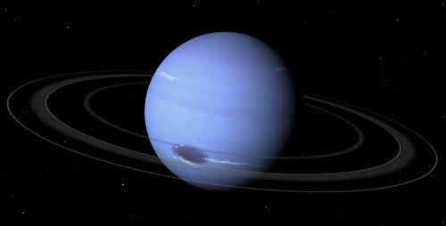

El nombre del planeta Neptuno, dios de los océanos para los romanos, en un proceso parecido al que tuvo lugar con Urano, fue adoptado por consenso dentro de la comunidad de astrónomos.
Neptuno fue el primer planeta descubierto mediante cálculos matemáticos, ya que los antiguos, al igual que ocurrió con Urano, pensaban que se trataba de una estrella. Oscuro, frío y regido por vientos supersónicos, el gigante de hielo Neptuno es el octavo y más distante planeta de nuestro sistema solar. Está tan lejos que es el único de los planetas que no es visible desde la Tierra a simple vista.
Neptuno guarda muchas similitudes con su vecino Urano. Así, Neptuno se clasifica como un gigante de hielo, y la mayor parte de su masa corresponde con una especie de "hielo" fluido de agua, amoníaco y metano que se asienta sobre un pequeño núcleo rocoso. Al igual que sucede en Urano, la atmósfera de Neptuno se compone principalmente de hidrógeno molecular, helio atómico y metano, aunque algunas pequeñas diferencias en esta hace que los dos planetas se vean de colores azules diferentes.